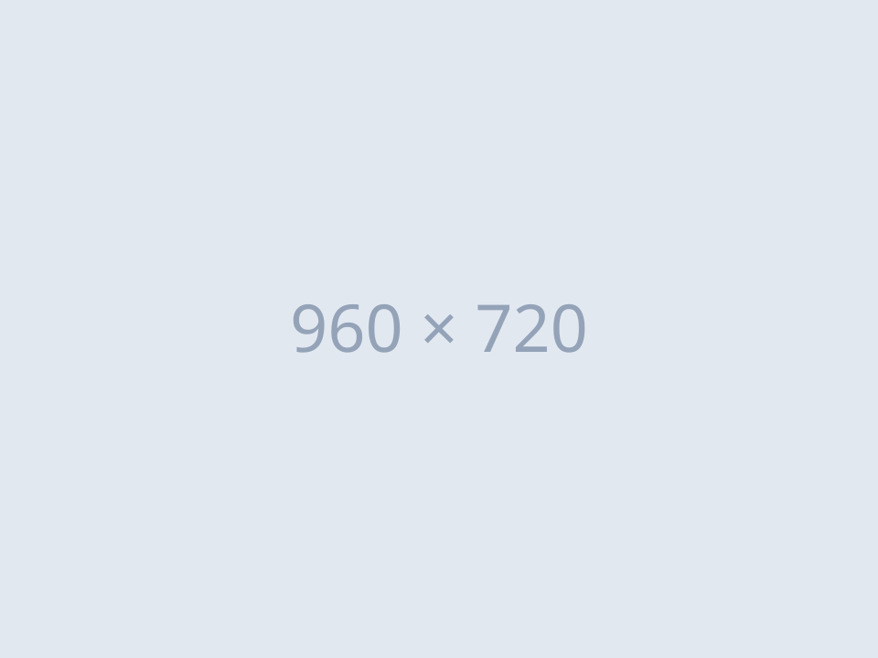

Sheet 01 / 11Services
One team from first sketch to last inspection.
Four services, bought one at a time or as one contract — the same engineers from the feasibility study to the fortieth-year inspection.

-

01
Advisory & Planning
Feasibility, consents and the business case, before a line is drawn.
We test routes, sites and options against cost, carbon and risk, then take the preferred scheme through planning and funding approval.
- Feasibility Studies
- Planning & Consents
- Business Cases
-
02
Design & Engineering
Civil, structural and systems design, modelled as one digital twin.
Eight disciplines work in one shared model, so a change to a pylon reaches the drainage, the cost plan and the programme the same day.
- Structural
- Civil
- Digital Engineering
-
03
Construction
Our own crews and supply chain, delivering safely to programme.
Site teams, plant and temporary works are ours, which is how 22 offices keep one safety standard and one way of building.
- Principal Contractor
- Temporary Works
- Commissioning
-
04
Operations & Maintenance
Inspection, upkeep and upgrades for decades after handover.
Asset teams inspect, maintain and upgrade what we built — and what others built — with the digital twin kept live from day one.
- Asset Inspection
- Planned Maintenance
- Upgrades & Renewals
Sheet 01.2Stages
How a project moves through the office.
-
01
Feasibility
Is it the right project, in the right place?
-
02
Concept
Options drawn, tested and costed.
-
03
Detailed Design
Every element specified in one model.
-
04
Construction
Built by our own crews, to the model.
-
05
Operation
Inspected, maintained and improved for decades.
Sheet 01.3Projects
All four services, one project.

Three ways to work with us.
-
A
Single Discipline
One service or one discipline, working alongside your own team and suppliers.
Start a Conversation about a single discipline -
B
Design & Build
Design and construction under one contract, one price and one programme.
Start a Conversation about design and build -
C
Whole-Life Partnership
From feasibility to decades of operation, with one accountable team throughout.
Start a Conversation about a whole-life partnership